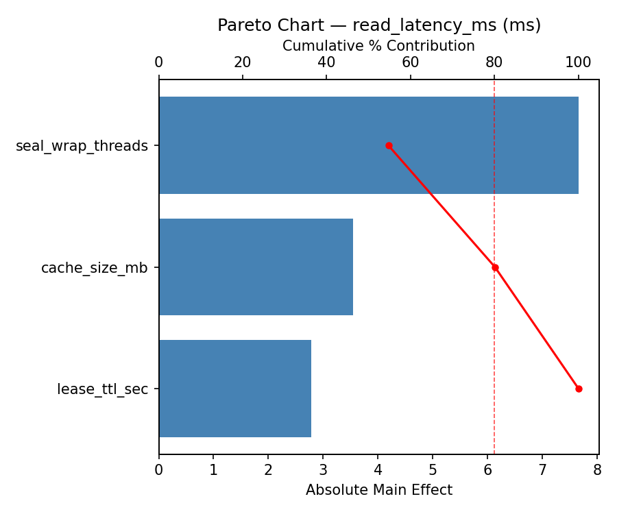
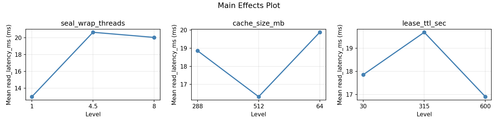
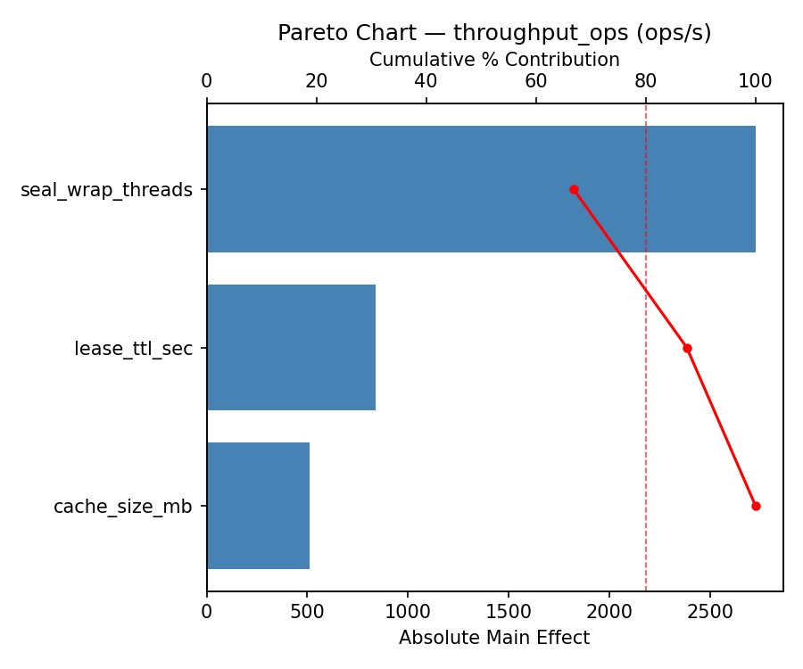
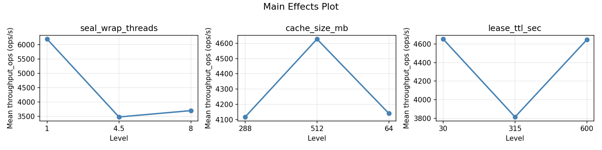
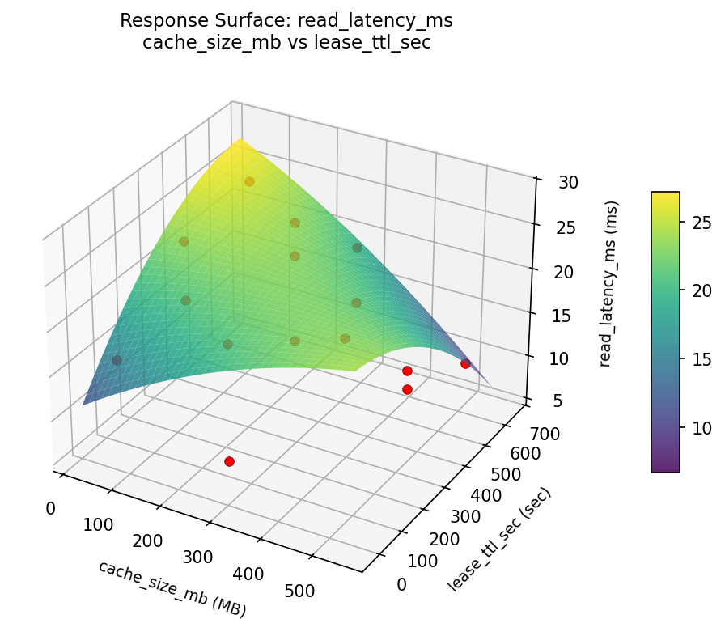
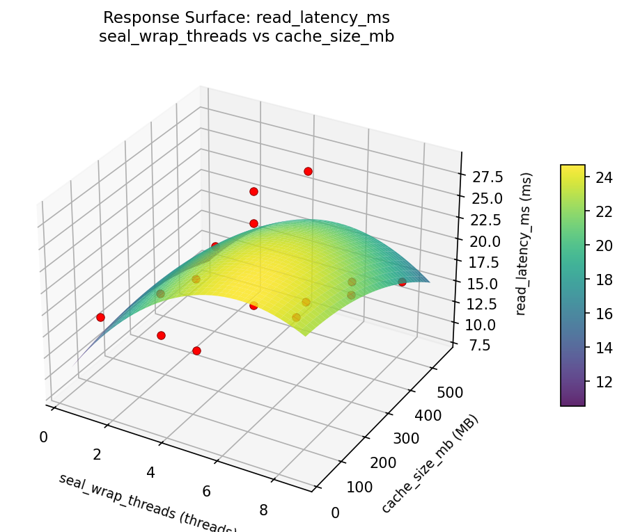
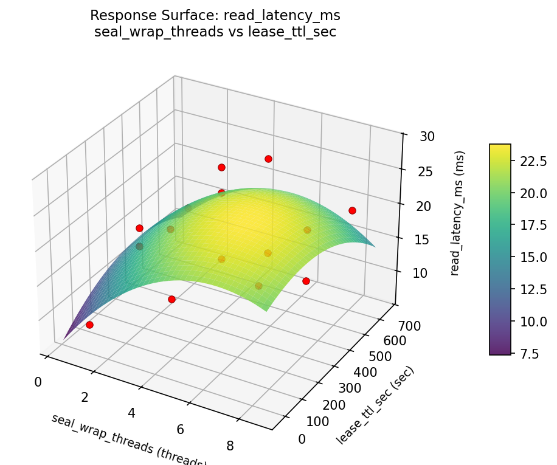
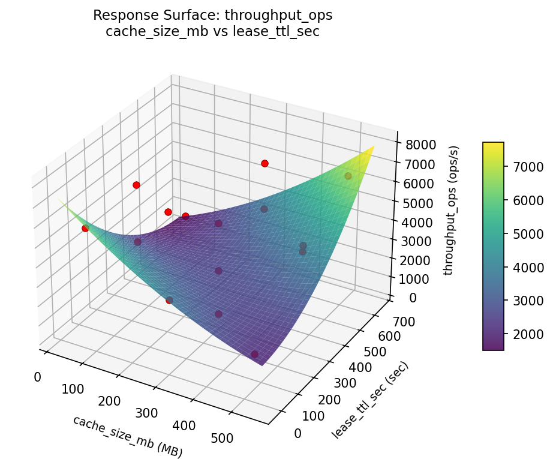
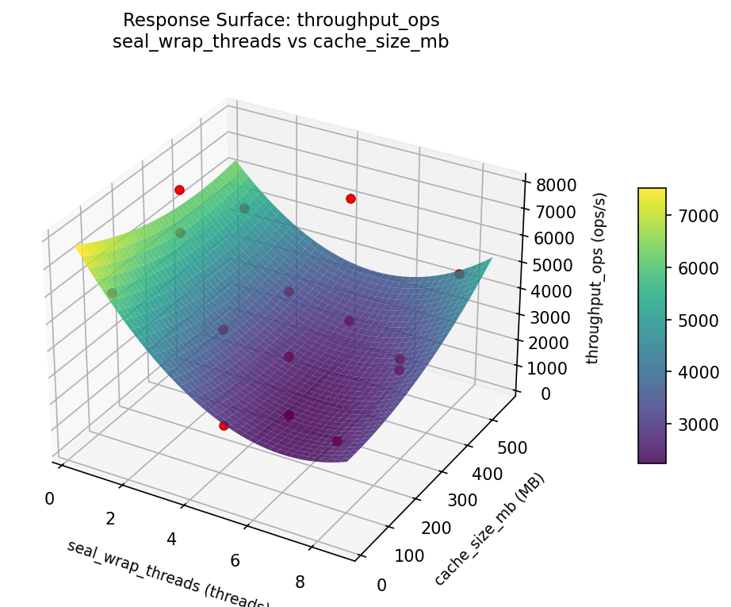
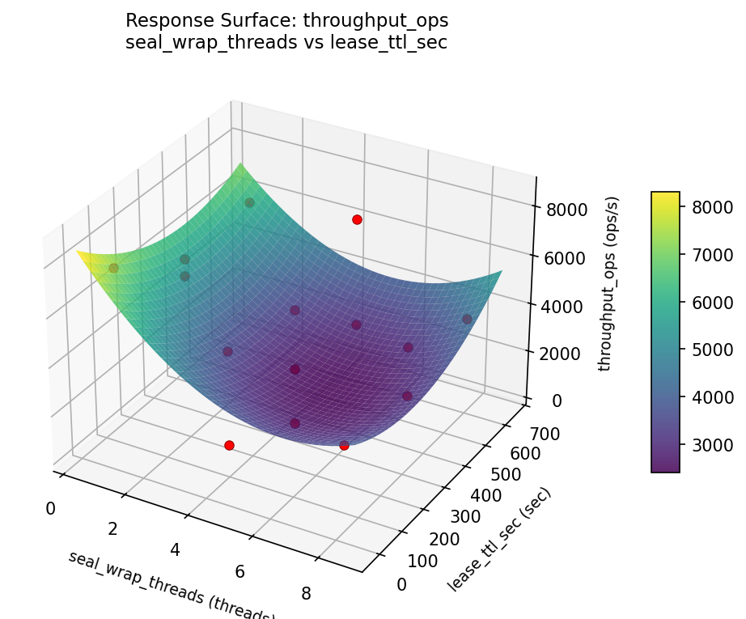

Summary
This experiment investigates secrets vault performance. Box-Behnken design to optimize vault seal wrap threads, cache size, and lease TTL for latency and throughput.
The design varies 3 factors: seal wrap threads (threads), ranging from 1 to 8, cache size mb (MB), ranging from 64 to 512, and lease ttl sec (sec), ranging from 30 to 600. The goal is to optimize 2 responses: read latency ms (ms) (minimize) and throughput ops (ops/s) (maximize). Fixed conditions held constant across all runs include vault backend = consul, seal type = awskms.
A Box-Behnken design was chosen because it efficiently fits quadratic models with 3 continuous factors while avoiding extreme corner combinations — requiring only 15 runs instead of the 8 needed for a full factorial at two levels.
Quadratic response surface models were fitted to capture potential curvature and factor interactions. The RSM contour plots below visualize how pairs of factors jointly affect each response.
Key Findings
For read latency ms, the most influential factors were lease ttl sec (50.3%), seal wrap threads (29.7%), cache size mb (20.0%). The best observed value was 8.4 (at seal wrap threads = 4.5, cache size mb = 288, lease ttl sec = 315).
For throughput ops, the most influential factors were lease ttl sec (50.2%), seal wrap threads (32.5%), cache size mb (17.4%). The best observed value was 7690.0 (at seal wrap threads = 4.5, cache size mb = 288, lease ttl sec = 315).
Recommended Next Steps
- Run confirmation experiments at the predicted optimal settings to validate the model.
- Consider whether any fixed factors should be varied in a future study.
Experimental Setup
Factors
| Factor | Low | High | Unit |
|---|
seal_wrap_threads | 1 | 8 | threads |
cache_size_mb | 64 | 512 | MB |
lease_ttl_sec | 30 | 600 | sec |
Fixed: vault_backend = consul, seal_type = awskms
Responses
| Response | Direction | Unit |
|---|
read_latency_ms | ↓ minimize | ms |
throughput_ops | ↑ maximize | ops/s |
Configuration
{
"metadata": {
"name": "Secrets Vault Performance",
"description": "Box-Behnken design to optimize vault seal wrap threads, cache size, and lease TTL for latency and throughput"
},
"factors": [
{
"name": "seal_wrap_threads",
"levels": [
"1",
"8"
],
"type": "continuous",
"unit": "threads"
},
{
"name": "cache_size_mb",
"levels": [
"64",
"512"
],
"type": "continuous",
"unit": "MB"
},
{
"name": "lease_ttl_sec",
"levels": [
"30",
"600"
],
"type": "continuous",
"unit": "sec"
}
],
"fixed_factors": {
"vault_backend": "consul",
"seal_type": "awskms"
},
"responses": [
{
"name": "read_latency_ms",
"optimize": "minimize",
"unit": "ms"
},
{
"name": "throughput_ops",
"optimize": "maximize",
"unit": "ops/s"
}
],
"settings": {
"operation": "box_behnken",
"test_script": "use_cases/64_secrets_vault_performance/sim.sh"
}
}
Experimental Matrix
The Box-Behnken Design produces 15 runs. Each row is one experiment with specific factor settings.
| Run | seal_wrap_threads | cache_size_mb | lease_ttl_sec |
|---|
| 1 | 4.5 | 64 | 30 |
| 2 | 4.5 | 288 | 315 |
| 3 | 8 | 288 | 600 |
| 4 | 8 | 288 | 30 |
| 5 | 4.5 | 288 | 315 |
| 6 | 4.5 | 288 | 315 |
| 7 | 1 | 288 | 600 |
| 8 | 8 | 64 | 315 |
| 9 | 4.5 | 64 | 600 |
| 10 | 8 | 512 | 315 |
| 11 | 1 | 288 | 30 |
| 12 | 4.5 | 512 | 600 |
| 13 | 1 | 64 | 315 |
| 14 | 1 | 512 | 315 |
| 15 | 4.5 | 512 | 30 |
Step-by-Step Workflow
1
Preview the design
$ python doe.py info --config use_cases/64_secrets_vault_performance/config.json
2
Generate the runner script
$ python doe.py generate --config use_cases/64_secrets_vault_performance/config.json \
--output use_cases/64_secrets_vault_performance/results/run.sh --seed 42
3
Execute the experiments
$ bash use_cases/64_secrets_vault_performance/results/run.sh
4
Analyze results
$ python doe.py analyze --config use_cases/64_secrets_vault_performance/config.json
5
Get optimization recommendations
$ python doe.py optimize --config use_cases/64_secrets_vault_performance/config.json
ℹ
Multi-Objective Optimization
This experiment has conflicting objectives (read_latency_ms (↓), throughput_ops (↑)). Use --multi to find the best compromise using desirability functions:
$ python doe.py optimize --config use_cases/64_secrets_vault_performance/config.json --multi
6
Generate the HTML report
$ python doe.py report --config use_cases/64_secrets_vault_performance/config.json \
--output use_cases/64_secrets_vault_performance/results/report.html
Features Exercised
| Feature | Value |
|---|
| Design type | box_behnken |
| Factor types | continuous (all 3) |
| Arg style | double-dash |
| Responses | 2 (read_latency_ms ↓, throughput_ops ↑) |
| Total runs | 15 |
Analysis Results
Generated from actual experiment runs using the DOE Helper Tool.
Response: read_latency_ms
Top factors: lease_ttl_sec (50.3%), seal_wrap_threads (29.7%), cache_size_mb (20.0%).
Pareto Chart

Main Effects Plot

Response: throughput_ops
Top factors: lease_ttl_sec (50.2%), seal_wrap_threads (32.5%), cache_size_mb (17.4%).
Pareto Chart

Main Effects Plot

Response Surface Plots
3D surfaces fitted with quadratic RSM. Red dots are observed data points.
read latency ms cache size mb vs lease ttl sec

read latency ms seal wrap threads vs cache size mb

read latency ms seal wrap threads vs lease ttl sec

throughput ops cache size mb vs lease ttl sec

throughput ops seal wrap threads vs cache size mb

throughput ops seal wrap threads vs lease ttl sec

Full Analysis Output
=== Main Effects: read_latency_ms ===
Factor Effect Std Error % Contribution
--------------------------------------------------------------
lease_ttl_sec 6.0929 1.5497 50.3%
seal_wrap_threads 3.6000 1.5497 29.7%
cache_size_mb 2.4250 1.5497 20.0%
=== Summary Statistics: read_latency_ms ===
seal_wrap_threads:
Level N Mean Std Min Max
------------------------------------------------------------
1 4 21.0750 7.1360 13.7000 28.5000
4.5 7 17.5143 5.8752 8.4000 24.9000
8 4 17.4750 5.9713 10.1000 24.1000
cache_size_mb:
Level N Mean Std Min Max
------------------------------------------------------------
288 7 18.8429 5.8046 10.1000 25.7000
512 4 19.3250 6.6795 13.5000 28.5000
64 4 16.9000 7.1782 8.4000 24.1000
lease_ttl_sec:
Level N Mean Std Min Max
------------------------------------------------------------
30 4 15.3500 4.7850 10.1000 21.4000
315 7 21.4429 5.2380 13.7000 28.5000
600 4 16.3250 7.1140 8.4000 25.7000
=== Main Effects: throughput_ops ===
Factor Effect Std Error % Contribution
--------------------------------------------------------------
lease_ttl_sec 2249.7857 527.1427 50.2%
seal_wrap_threads 1456.7500 527.1427 32.5%
cache_size_mb 778.7500 527.1427 17.4%
=== Summary Statistics: throughput_ops ===
seal_wrap_threads:
Level N Mean Std Min Max
------------------------------------------------------------
1 4 3305.2500 2630.3067 320.0000 5845.0000
4.5 7 4762.0000 1897.9736 2605.0000 7690.0000
8 4 4334.2500 1875.5485 2148.0000 6603.0000
cache_size_mb:
Level N Mean Std Min Max
------------------------------------------------------------
288 7 4339.0000 1852.9262 1901.0000 6603.0000
512 4 3800.5000 2514.2164 320.0000 6102.0000
64 4 4579.2500 2414.8763 2148.0000 7690.0000
lease_ttl_sec:
Level N Mean Std Min Max
------------------------------------------------------------
30 4 5468.5000 1463.9040 3324.0000 6603.0000
315 7 3218.7143 1834.7810 320.0000 5696.0000
600 4 4871.7500 2366.3146 1901.0000 7690.0000
Optimization Recommendations
=== Optimization: read_latency_ms ===
Direction: minimize
Best observed run: #10
seal_wrap_threads = 4.5
cache_size_mb = 288
lease_ttl_sec = 315
Value: 8.4
RSM Model (linear, R² = 0.1765, Adj R² = -0.0481):
Coefficients:
intercept +18.4533
seal_wrap_threads -2.4625
cache_size_mb -2.1125
lease_ttl_sec -0.7750
RSM Model (quadratic, R² = 0.4896, Adj R² = -0.4293):
Coefficients:
intercept +13.3000
seal_wrap_threads -2.4625
cache_size_mb -2.1125
lease_ttl_sec -0.7750
seal_wrap_threads*cache_size_mb -3.2750
seal_wrap_threads*lease_ttl_sec -0.3000
cache_size_mb*lease_ttl_sec +0.5500
seal_wrap_threads^2 +2.4125
cache_size_mb^2 +2.5125
lease_ttl_sec^2 +4.7375
Curvature analysis:
lease_ttl_sec coef=+4.7375 convex (has a minimum)
cache_size_mb coef=+2.5125 convex (has a minimum)
seal_wrap_threads coef=+2.4125 convex (has a minimum)
Notable interactions:
seal_wrap_threads*cache_size_mb coef=-3.2750 (antagonistic)
cache_size_mb*lease_ttl_sec coef=+0.5500 (synergistic)
seal_wrap_threads*lease_ttl_sec coef=-0.3000 (antagonistic)
Predicted optimum (from linear model):
seal_wrap_threads = 1
cache_size_mb = 64
lease_ttl_sec = 315
Predicted value: 23.0283
Model quality: Weak fit — consider adding center points or using a different design.
Factor importance:
1. lease_ttl_sec (effect: 5.2, contribution: 36.1%)
2. seal_wrap_threads (effect: 4.9, contribution: 34.4%)
3. cache_size_mb (effect: 4.2, contribution: 29.5%)
=== Optimization: throughput_ops ===
Direction: maximize
Best observed run: #10
seal_wrap_threads = 4.5
cache_size_mb = 288
lease_ttl_sec = 315
Value: 7690.0
RSM Model (linear, R² = 0.1913, Adj R² = -0.0293):
Coefficients:
intercept +4259.4667
seal_wrap_threads +749.5000
cache_size_mb +907.8750
lease_ttl_sec +97.1250
RSM Model (quadratic, R² = 0.5736, Adj R² = -0.1940):
Coefficients:
intercept +5872.3333
seal_wrap_threads +749.5000
cache_size_mb +907.8750
lease_ttl_sec +97.1250
seal_wrap_threads*cache_size_mb +1335.0000
seal_wrap_threads*lease_ttl_sec +224.5000
cache_size_mb*lease_ttl_sec -592.2500
seal_wrap_threads^2 -481.5417
cache_size_mb^2 -752.2917
lease_ttl_sec^2 -1790.2917
Curvature analysis:
lease_ttl_sec coef=-1790.2917 concave (has a maximum)
cache_size_mb coef=-752.2917 concave (has a maximum)
seal_wrap_threads coef=-481.5417 concave (has a maximum)
Notable interactions:
seal_wrap_threads*cache_size_mb coef=+1335.0000 (synergistic)
cache_size_mb*lease_ttl_sec coef=-592.2500 (antagonistic)
seal_wrap_threads*lease_ttl_sec coef=+224.5000 (synergistic)
Predicted optimum (from linear model):
seal_wrap_threads = 8
cache_size_mb = 512
lease_ttl_sec = 315
Predicted value: 5916.8417
Model quality: Weak fit — consider adding center points or using a different design.
Factor importance:
1. cache_size_mb (effect: 1815.8, contribution: 35.5%)
2. lease_ttl_sec (effect: 1799.3, contribution: 35.2%)
3. seal_wrap_threads (effect: 1499.0, contribution: 29.3%)